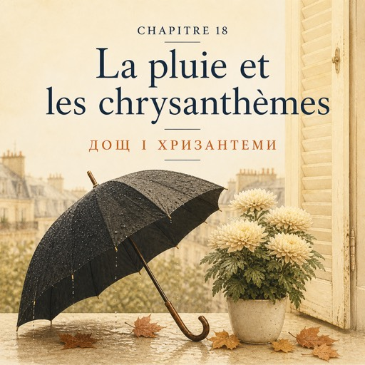

Le vendredi 10 octobre — п'ятниця, 10 жовтня
Cette nuit, la pluie a commencé. Ce matin, elle ne s'est pas arrêtée.
Уночі почався дощ. Уранці він так і не вщух.
Les seaux restent dedans. Le trottoir se balaie tout seul.
Відра лишаються всередині. Тротуар підмітається сам.
C'est la première vraie pluie de l'automne.
Це перший справжній дощ цієї осені.
À neuf heures, la camionnette du fournisseur s'arrête devant la porte.
О дев'ятій під дверима зупиняється фургончик постачальника.
Karim rentre les cartons mouillés, deux par deux.
Карім заносить мокрі коробки, по дві за раз.
— Wesh. T'as vu la flotte ? J'suis trempé.
— Wesh. Ти бачила цю flotte? Я мокрий наскрізь.
— La flotte ?
— La flotte?
— La flotte, c'est l'eau. La pluie, quoi.
— La flotte — це вода. Ну, дощ.
Dans les cartons, il y a des chrysanthèmes. Jaunes, blancs, rouge sombre. Beaucoup.
У коробках хризантеми. Жовті, білі, темно-червоні. Багато.
— Déjà ? On est le dix octobre.
— Уже? Сьогодні десяте жовтня.
— La Toussaint, c'est le premier novembre, dit Solange. Il faut les avoir avant.
— Тусен — це перше листопада, — каже Соланж. — Треба мати їх заздалегідь.
Tout le monde les veut la même semaine.
Усі хочуть їх того самого тижня.
Elle sort un pot d'un carton.
Вона дістає з коробки горщик.
— Celui-là vit dehors. Il tient tout l'hiver, et il n'a pas besoin de beaucoup d'eau.
— Оцей живе надворі. Він тримається всю зиму, і води йому багато не треба.
— Et je l'arrose comment ?
— А поливати як?
— Un peu, souvent. La terre reste humide, jamais mouillée. Et pas de soleil direct.
— Потроху, часто. Земля має лишатися вологою, але не мокрою. І без прямого сонця.
— Et les fleurs coupées ?
— А зрізані квіти?
— Vous coupez les tiges en biais. Vous changez l'eau tous les deux jours.
— Стебла ріжете навскіс. Воду міняєте кожні два дні.
Et vous mettez le seau à l'ombre, jamais près du chauffage.
І ставите відро в тінь, ніколи не біля батареї.
Natalia écrit dans son carnet : en biais, tous les deux jours, à l'ombre.
Наталя записує в блокнот: навскіс, кожні два дні, у тінь.
— Ça tient combien de temps ?
— А скільки вони стоять?
— Trois semaines. C'est la fleur la plus solide de la boutique.
— Три тижні. Це найміцніша квітка в магазині.
— Alors pourquoi personne n'en achète pour la maison ?
— То чому їх ніхто не купує додому?
Solange pose le pot.
Соланж ставить горщик.
— Parce qu'ici, le chrysanthème, c'est la fleur des morts.
— Бо тут хризантема — це квітка мертвих.
On en met sur les tombes, à la Toussaint. On n'en offre pas à une personne vivante.
Їх кладуть на могили, на Тусен. Живій людині їх не дарують.
— Jamais. Et vous devez le savoir.
— Ніколи. І ви маєте це знати.
Un jour, un client va en demander pour un anniversaire. Vous allez dire non. Gentiment, mais non.
Колись клієнт попросить їх на день народження. Ви скажете ні. Лагідно, але ні.
Natalia regarde les cartons. Trois semaines, et personne n'en veut sur une table.
Наталя дивиться на коробки. Три тижні стійкості — і ніхто не хоче їх собі на стіл.
Chez elle, c'est le nombre : jamais deux fleurs, jamais quatre. Ici, c'est la fleur elle-même.
Удома це число: ніколи дві квітки, ніколи чотири. Тут — сама квітка.
Deux pays. La même règle, écrite avec autre chose.
Дві країни. Те саме правило, тільки написане іншим.
Solange s'assoit sur le tabouret de l'atelier et met la main sur son genou.
Соланж сідає на табурет у майстерні й кладе руку на коліно.
Natalia la regarde et ne dit rien.
Наталя дивиться на неї й нічого не каже.
À midi, une grosse averse. La rue se vide en dix secondes.
Опівдні — сильна злива. Вулиця порожніє за десять секунд.
Il fait froid, et peu de clients.
Холодно, і клієнтів мало.
Karim écrit sur l'ardoise, à l'intérieur aujourd'hui : chrysanthèmes en pot, huit euros.
Карім пише на ардуазі — сьогодні вона всередині: хризантеми в горщику, вісім євро.
À cinq heures, une dame entre, secoue son parapluie et demande quelque chose pour sa table. Juste de la couleur.
О п'ятій заходить пані, обтрушує парасольку й просить щось на стіл. Просто трохи кольору.
Natalia lui donne cinq dahlias, les derniers de la saison, et un peu d'eucalyptus. Seize euros cinquante.
Наталя дає їй п'ять жоржин, останніх у сезоні, і трохи евкаліпта. Шістнадцять євро п'ятдесят.
Puis elle explique : couper les tiges en biais, changer l'eau tous les deux jours, pas de soleil.
Потім пояснює: різати стебла навскіс, міняти воду кожні два дні, без сонця.
La dame répète après elle, doucement, comme au cours.
Пані повторює за нею, тихенько, як на курсах.
Personne ne lui a demandé comment faire. Elle l'a dit toute seule.
Ніхто не питав її, як це робиться. Вона сказала сама.
Dans l'atelier, les chrysanthèmes attendent.
У майстерні хризантеми чекають.
Ils attendent le premier novembre.
Чекають на перше листопада.